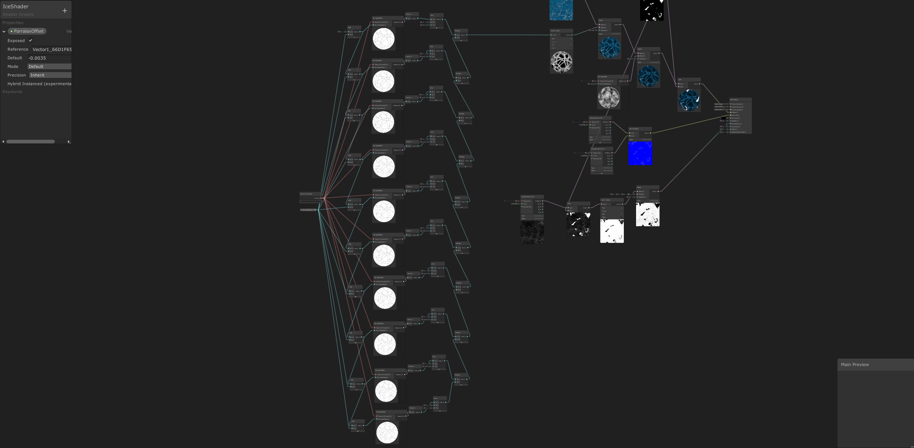
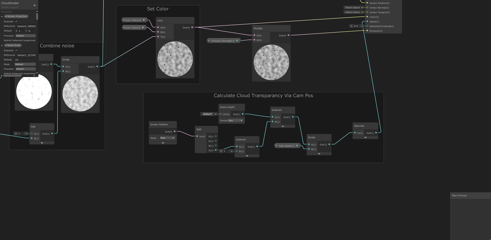

Vaporwave Car Ride
A bit of a deeper dive into the rendering side of game engines.
Learn more
I like winter and snow. So to get in the mood for winter I started working on this project.
My goal is to make a realistic winter wonder land that I can keep on expanding while I learn.
 I guess this project could be seen as kind of chaotic, seeing as I don't have any clear goal or direction. All I want to do in this project is add seperate things that catch my eye and merge them into an cohesive environment. The first thing I made is the ice. The idea behind the ice was that I wanted to make a shader with depth and obscured reflections. The depth in the ice is made by layering an ice crack texture at a decreasing depth. The most interesting thing about this shader for me is the matte snow on the reflective ice. I accomplished this by using with a specular map. I'd heared of them before but never knew how cool they could be.
The fire that you can see in the first part of the video is made with hand drawn sprites. I am not much of an artist but as of late i've seen how powerful simple drawings can be when used in particle systems. It's amazing that a black and white image can transform this much just by layering some effects. This element really helped me understand that most particle systems are built on a base of pretty simple images.
 Clouds are pretty great in my opinion. You can see animals, cars, food or people withing them. Or... you can use an enmormous disk made up out of 100 000 tri's to create them. Not the best decicion I later realized. But there's no denying that this was by far the easiest and most awesome way. Vertex displacement is a very powerful tool. This project helped me understand that. This is the main premise the clouds function on. I also wanted to add a way of sinking into them. What I mean by that is. I wanted to make objects interact with the clouds. Ultimately I accomplished this by determening the alpha based on the scene depth and camera position.
A bit of a deeper dive into the rendering side of game engines.
Learn moreThis is one of the bigges projects that i've worked on to date. 100 people, one game. This was my experience.
Learn more